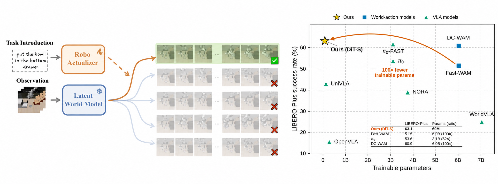
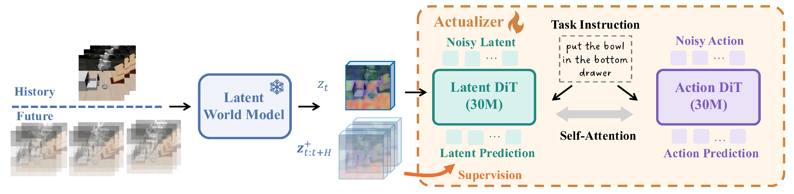
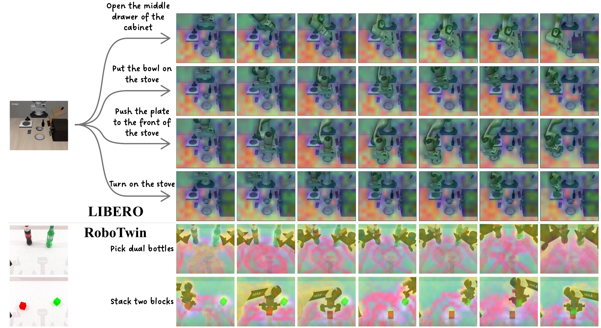

A pretrained video world model admits many plausible futures for a scene, but a robot must realize the exact task-conditioned one. To turn world models into executable robot policies, existing methods fine-tune the heavy world model backbone using large-scale robot data and computational resources. Challenging this status quo, we argue that the expensive part has already been paid in the world model pretraining since the representation space of a video world model lays out the diverse potential futures.
In this case, what remains is to select the future that accomplishes the task and to read out the actions that realize it. We formalize this task as actualization, which learns a task-conditioned selection and realization on top of a prior supplied by a frozen world model. This can be solved by a tiny actualizer model. We implement RoboActualizer with as few as 60M parameters on top of a frozen world model encoder. The actualizer is composed of two lightweight DiT experts that jointly predict future latents and actions by flow matching. The model can be trained entirely on a single GPU with 32 GB peak memory. With up to 100 times fewer trainable parameters than existing WAMs and VLAs, RoboActualizer reaches great performance on simulation benchmarks including LIBERO, LIBERO-Plus, RoboTwin~2.0 and five tasks on two real-world platforms, with a low latency of 39 ms that allows real-time control.
What the world model leaves undetermined.
The world model captures all plausible futures that may follow the current scene, forming a mixture over different task-conditioned outcomes. However, without knowing the task instruction, it cannot determine which future will actually be realized.
What the actualizer remains to learn.
Given a task instruction, the actualizer selects the corresponding future from the world-model prior and predicts the actions needed to realize it. In this view, the frozen world model provides what can happen, while the actualizer learns which future to pursue and how to achieve it.

We first use a frozen latent world model to predict how the scene may evolve in the future. Our actualizer then jointly predicts task-conditioned future latents and robot actions with two interacting DiT branches. The world-model future predictions supervise the latent branch, helping the policy generate actions that are consistent with plausible scene dynamics.
| Method | Trainable Params. | Embodied PT | Spatial | Object | Goal | Long | Overall | Latency (ms) |
|---|---|---|---|---|---|---|---|---|
| OpenVLA | 279M | Yes | 84.7 | 88.4 | 79.2 | 53.7 | 76.5 | 145.5 |
| π0 | 3.3B | Yes | 96.8 | 98.8 | 95.8 | 85.2 | 94.1 | 120.4 |
| π0.5 | 3.3B | Yes | 98.8 | 98.2 | 98.0 | 92.4 | 96.9 | 128.5 |
| UniVLA | 123M | Yes | 96.5 | 96.8 | 95.6 | 92.0 | 95.2 | 157.3 |
| Motus | 5.9B | Yes | 96.8 | 99.8 | 96.6 | 97.6 | 97.7 | 2230.0 |
| WorldVLA | 7.0B | No | 87.6 | 96.2 | 83.4 | 60.0 | 81.8 | 397.5 |
| Fast-WAM | 6.0B | No | 98.2 | 100.0 | 97.0 | 95.2 | 97.6 | 111.7 |
| RoboActualizer (ours) | 60M | No | 98.4 | 100.0 | 96.6 | 96.8 | 98.0 | 39.9 |
| Method | Trainable Params. | Camera | Robot | Lang. | Light | Bg. | Noise | Layout | Overall | Latency (ms) |
|---|---|---|---|---|---|---|---|---|---|---|
| OpenVLA | 279M | 0.8 | 3.5 | 23.0 | 8.1 | 34.8 | 15.2 | 28.5 | 15.6 | 145.5 |
| π0 | 3.3B | 13.8 | 6.0 | 58.8 | 85.0 | 81.4 | 79.0 | 68.9 | 53.6 | 120.4 |
| π0-Fast | 3.3B | 65.1 | 21.6 | 61.0 | 73.2 | 73.2 | 74.4 | 68.8 | 61.6 | 68.5 |
| UniVLA | 123M | 1.8 | 46.2 | 69.6 | 69.0 | 81.0 | 21.2 | 31.9 | 42.9 | 157.3 |
| WorldVLA | 7.04B | 0.1 | 27.9 | 41.6 | 43.7 | 17.1 | 10.9 | 38.0 | 25.0 | 397.5 |
| Fast-WAM | 6.02B | 16.4 | 44.5 | 68.9 | 78.2 | 53.7 | 37.7 | 60.7 | 51.5 | 111.7 |
| DC-WAM | 6.00B | 23.9 | 51.7 | 83.4 | 91.7 | 61.3 | 54.2 | 69.8 | 60.9 | —* |
| RoboActualizer (ours) | 60M | 37.6 | 51.1 | 68.6 | 85.1 | 60.4 | 54.5 | 60.9 | 63.1 | 39.9 |
| Method | Trainable Params. | Success Rates (%) |
|---|---|---|
| π0.5 | 3.3B | 31.4 |
| LingBot-VA | 5.3B | 17.2 |
| Fast-WAM | 6.0B | 41.9 |
| RoboActualizer (ours) | 60M | 58.8 |
We also evaluate five real-world tasks across two platforms: a stationary G1 humanoid with a Unitree Dex3-1 hand and head-mounted RealSense camera for bimanual manipulation, and a FANUC CRX-i10 arm with two third-person cameras and one in-hand camera for single-arm manipulation. Our method consistently outperforms the corresponding baselines across all five tasks, demonstrating effective learning on both single-arm and bimanual platforms.
How does a lightweight actualizer help?
Joint latent-and-action prediction is essential: removing the latent target reduces success from 60.0% to 17.9%, showing that an action-only policy on frozen V-JEPA features generalizes poorly. By explicitly actualizing future latents, the lightweight model unlocks the world model's predictive structure, while PCA visualizations show that it faithfully predicts both task-conditioned and instruction-dependent diverse futures.

How is RoboActualizer different from latent world action models?
Unlike latent world action models that use large networks to learn future dynamics in semantic feature spaces, RoboActualizer reuses predictive structure already present in a frozen video world model and only learns to select and realize a task-conditioned future. The representation ablation confirms that temporal predictivity matters more than representation strength alone, enabling a much smaller actualizer.
| Representation | Params. | Input Range | Latent Predictivity | Success Rates (%) |
|---|---|---|---|---|
| DINOv3 | 300M | 1 frame | ✕ | 39.7 |
| WAN VAE | 127M | 4 frames | ✕ | 25.9 |
| V-JEPA 2.1image | 300M | 1 frame | ✕ | 46.4 |
| V-JEPA 2.1image | 300M | 4 frames | ✕ | 44.8 |
| V-JEPA 2.1video | 300M | 4 frames | ✓ | 60.0 |
How do we allocate the computation?
Scaling the frozen world model improves success more than scaling the trainable actualizer. This indicates that predictive capacity is best placed in the pretrained prior, while a compact actualizer is sufficient for future selection and action realization.
| World Model | Actualizer | Success Rates (%) |
|---|---|---|
| V-JEPA 2.1 (80M) | DiT-S (60M) | 50.7 |
| V-JEPA 2.1 (80M) | DiT-B (245M) | 53.2 |
| V-JEPA 2.1 (300M) | DiT-S (60M) | 60.0 |
| V-JEPA 2.1 (300M) | DiT-B (245M) | 61.0 |
@article{zhao2025dexctrl,
title={DexCtrl: Towards Sim-to-Real Dexterity with Adaptive Controller Learning},
author={Zhao, Shuqi and Yang, Ke and Chen, Yuxin and Li, Chenran and Xie, Yichen and Zhang, Xiang and Wang, Changhao and Tomizuka, Masayoshi},
journal={arXiv preprint arXiv:2505.00991},
year={2025}
}